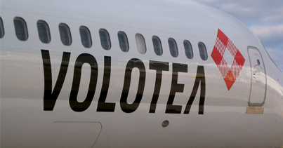
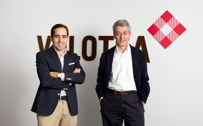

En Volotea hacemos que lo normal sea real: unimos las ciudades pequeñas y medianas de Europa entre ellas, sin necesidad de hacer escala, mediante vuelos directos y a precios muy competitivos. Queremos que pase más tiempo en su destino y menos en el avión.
Ofrecemos muchos destinos, vuelos non-stop, precios justos, tiempos lógicos, aeropuertos amigables, complicidad con lo local y una sencilla hospitalidad. Buen servicio a bajo coste.
Nos dirigimos a un mercado potencial con más de 500 rutas en 70 ciudades, las "otras ciudades" de Europa. Nos inspira pensar a escala humana: en vez de atender a los de siempre, atendemos a los de nunca.
Y para conseguirlo hemos reunido un equipo de inversores y profesionales de primer nivel y con amplia experiencia en el sector aéreo.
El 5 de abril, nuestro primer Boeing 717 despegará del aeropuerto Marco Polo de Venecia, donde inicialmente basaremos tres aviones.
Este modelo de avión, de 125 plazas y con motores Rolls-Royce (silenciosos y con una gran eficiencia energética), permite una elevada fiabilidad operativa y ofrece altos niveles de confort, al contar con solo cinco butacas por fila.
Carlos Muñoz y Lázaro Ros (consejero delegado y director general respectivamente) son los fundadores de Volotea. Carlos y Lázaro crearon también Vueling Airlines, que en estos momentos es la tercera aerolínea de bajo coste en Europa por volumen de pasajeros.
Volotea cuenta además con profesionales de larga trayectoria en el sector aéreo europeo.
